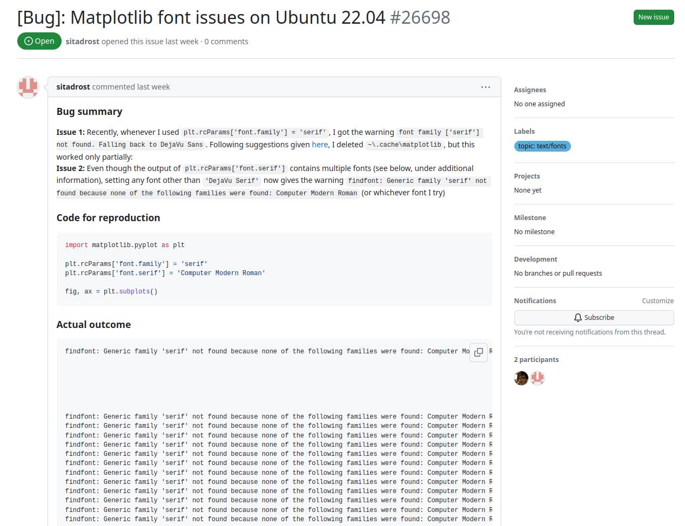

Solving issues and debugging#
When writing code you will inevitably get it wrong occasionally. You will therefore always hit some issues when writing any code. Some issues are easy to fix (you’ve typo’d a library or module), whilst some are extremely difficult to fix (a bug deep in a library that is used by a library you use). Here, we’re going to concentrate on what kind of issues you might come across and how you might go about understanding them.
The same kind of issues will crop up for both Python and R. I will give examples of both as we go through.
Types of issues#
There are several types of issues you will come across:
warnings: These are not errors. They could be anything from “this code will go out of date in 10 years time” to “you haven’t set something you should have. This may not work”. Read it carefully and decide if you need to care or not.
errors: These are errors and you need to fix them. R and Python will tell you where the error is and often how to fix it. These are your problem to deal with.
bugs: These are also errors and you also need to fix them. However, you may get no warnings, or message, just output you didn’t expect! A bug is simply unexpected behaviour. It is usually your problem to deal with, however, it is possible the bug is in a library you’re using. We will learn how to report these kind of issues if we need to.
seg faults: This is a major error in the code. A segmentation fault (or seg fault) is usually caused by accessing memory you shouldn’t have access to. In Python and R these are very rare as memory allocation is handled for us, rather than by us. However, libraries like numpy use C and hence we could experience one of these.
Simple issues#
The majority of issues encountered when writing code are really straight forward. You have messed up the syntax, or typo’d a library name, etc.
This happens a lot. As someone who has used dozens of programming languages over the years I often mix them up and type some weird hybrid
of R, Python, Perl, PHP and/or Matlab. Possibly with a bit of Fortran and C in there too. Each language has it’s own idiosyncrasies which you
will get used to. In addition, it’s very easy to type a [ instead of a {.
What makes these errors simple though is that you are told about them when you run the code! Sometimes a bit obscurely, but once you can decipher the error message they are easy to fix.
R examples#
If we make an error in our R code we will receive a message like:
libary(ggplot2)
gives
Error in libary(ggplot2) : could not find function "libary"
Note R doesn’t tell us what the mistake is, just that it couldn’t find a function called libary which is a
typo (and should be library). We’ll get similar messages if we typo a variable name (object not found).
This can be frustrating, especially if the typo is not easy to spot! It’s also frustrating that R does not often
tell you the line number or give you an indication of where the error is.
Some common messages you will see and their meaning:
Object not found: a variable name is mistyped - remember they are case-sensitive
Cannot open the connection: a filename or path is not correct
subscript out of bounds: You tried to access a vector or data.frame with a subscript that doesn’t exist
non-numeric argument to a binary operator: R is expecting a number. You’ve given it something else (a vector, a string?)
unexpected symbol: You’ve forgotten a
(or a,or similar.
So if R is a bit annoying and doesn’t tell you where the error is precisely, can you do anything about that? Yes!
R does contain a function called traceback that goes back up your code to the error.
f <- function(x) x + 1
g <- function(x) f(x)
g("a")
Will give a “non-numeric” error. Try typing traceback()
traceback()
to give:

2: f(x) at #1
1: g("a")
So we now know it was the g(“a”) causing the issue and the error occurred in the f function
Python examples#
If we make an error in our Python code we will receive a message like:
{kind=link}
gives
impot numpy
^
SyntaxError: invalid syntax
Python generally tells you what the error is and even points to it in a small representation of your code. Consider the following simple code.
def calculate_sum(a, b):
total = a + b
return total
x = 5
y = 10
z = calculate_sum(x, w)
print(z)
will give you:
5 x = 5
6 y = 10
----> 7 z = calculate_sum(x, w)
8 print(z)
NameError: name 'w' is not defined
Line number, exact error and some context. Easy! The only thing is to work out what is meant by the error type.
Some common errors you will see and their meaning:
NameError: The variable or function doesn’t exist
TypeError: You’ve tried to do an operation using the wrong kind of data, e.g. add an integer and a string.
IndexError: You’ve tried to acces a list or dictionary out of the range
AttributeError: You’ve tried to use a method on an object that doesn’t exist
In more complex code, Python will also give a stack trace where you can see the various functions that eventually lead to where the error is. Let’s look at this simple code:
# example.py
def say(name):
print('Hello, ' + nam)
say('Jon')
There’s an error here (nam instead of name). When we run this:
Traceback (most recent call last):
File "test.py", line 5, in <module>
say('Jon')
File "test.py", line 3, in say
print('Hello, ' + nam)
NameError: name 'nam' is not defined
We read this from the bottom up. The error is a NameError. It is on line 3 of our code. We caused this by calling
the say function on line 5. We can see this is a bug in the say function. If that’s our code we can fix, if it’s not
re-read any documentation for the function and check you’re passing in the correct data.
Warning examples#
Warnings are noncritical messages, normally issued by a library or module you’re using. However, most of the time they are an error (as in you’re getting the wrong answer) but the code can still continue. You should therefore pay attention and decide if you do need to care.
R warning examples#
cor( c( 1 , 1 ), c( 2 , 3 ) )
[1] NA
Warning message:
In cor(c(1, 1), c(2, 3)) : the standard deviation is zero
Here, the user has tried to perform a correlation with 2 points. The warning shows this isn’t a good idea,
but the cor function could produce an answer (albeit NA).
Python warning example#
In this example I divide by zero; mathmatically producing infinity.
import numpy as np
np.array([1])/0
<ipython-input-2-f6baf8772c4a>:1: RuntimeWarning: divide by zero encountered in divide
np.array([1])/0
Out[2]: array([inf])
Note I get a RuntimeWarning which gives a message and the line of code. I still get an answer,
here, inf.
It’s unlikely I actually wanted that, but I would need to work out a way of dealing with this if the numbers were supplied by a user or in the data. The warnings can therefore be very useful!
Practical exercise
Try the following codes and check you understand the warning or error.
list_of_URLs = (
'https://example.com/1',
'https://example.com/2",
'https://example.com/3
)
print(list_of_URLs)
list_of_URLs = c(
'https://example.com/1',
'https://example.com/2",
'https://example.com/3
)
print(list_of_URLs)
user = 'username1'
pass = 'password1'
first = 'Mercedes'
next = 'Aston Martin'
print(100 is 100)
x <- 1:10000
x
Solution
The first example (R and Python) contains two errors. ‘https://example.com/2” uses different quote marks to start and end. If you fixed that, there then a missing ‘ at the end of the third URL.
The second set of examples (R and Python) both use reserved words. You cannot use those for variable names.
The final two examples issue warnings. The Python example checks you meant is not ==.
The R example prints a warning about max.print (i.e. you’ve printed too much!). We can
alter that.
Bugs#
Bugs are errors in the code that result in incorrect output or the program to fail. In other words they are unintentional behaviours of the code. With ever more complex software being developed which uses a stack of other libraries to create the functionality making sure your code is bug free is getting harder but yet more important. It’s also important to note that bugs are always introduced by programmers; they don’t manifest themselves!
There are a number of different categories of bugs:
Arithmetic: dividing by zero, creating a number larger than the computer can handle, loss of precision etc can all introduce bugs
Control flow: your logic may not be correct, so the program goes into a branch not expected.
Interfacing: If you use other libraries (which you will!) you can pass incorrect data to them. This is particularly challenging when a library updates on a system and the interface (called the Application Programming Interface or API) changes.
Concurrency: when using more than one core or using threads you can end up deadlocking (nothing runs) or a race condition (wrong order) etc. Parallel programming is very hard because of this.
Resource bugs: Using an initialised variable or a null pointer. This are actually quite hard to generate in interpreted languages like Python and R.
Syntax: Using
x==5rather thanx=5can be valid syntax but not what you expected. Again, in interpreted languages this is hard to do as you get an error or warning.Human: When working in teams it is really important to communicate and use tests. It is very easy to add bugs by not updating comments, not documenting code correctly and duplicating code.
Of special note are security bugs. These will not be of major concern to us, but if you develop something that interacts with both a computer and the internet this can cause severe damage. They generally come about by not checking user input fully. So rather than running a query on a databse the user supplied code deletes the entire database.
Reporting a bug#
One of the best ways of giving back to the open souce community is to report bugs when you
come across them. As a beginner programmer it’s more likely that the error is in your code
rather than a well used library like matplotlib or ggplot2. However, you may well
find the odd bug as you go.
When reporting a bug you need to give enough information for the developer to recreate the problem. The most useful thing to provide is an example code which is as small as possible; a minimum reproducible example or MRE. You would take your failing code and strip away anything that is not associated with the bug. You should then describe the error/issue, and give details of your set-up, including Python or R version, your operating system and what you expected to happen.
What are come examples of bugs? They are actually quite easy to find as most of R and Python modules and libraries are open source and hence issues/bugs are reported.
Here is an example of a bug in matplotlib:
It always worth searching the Open and Closed bugs to see if your issue is there first.
Practical exercise
Reproducing a bug
Find a bug on github for an R or Python package/library which has an MRE.
Can you replicate the bug and the error message?
Fixing Errors#
We have discussed how to get an error, warning or bug, but so far we can’t fix them!
The first thing it to read it carefully, using the stack trace or traceback and try to understand it yourself. If you can’t figure it out, then you can try searching for the error message on the internet. Copy and paste the error removing any filepaths.
Try the following:
import pandas as pd
df = pd.DataFrame({'x':['1.0692e+06']})
df['x'].astype('int')
ValueError: invalid literal for int() with base 10: '1.0692e+06'
The error is much longer than I gave here, but try copying and pasting the lower part into a search engine and you will hopefully find a page with some answers on what the error is and even how to fix it. Note that I have not copied any of the specific parts of the error in a search, e.g.:
File ~/.local/lib/python3.8/site-packages/pandas/core/dtypes/cast.py:1154, in astype_nansafe(arr, dtype, copy, skipna)
1150 elif is_object_dtype(arr.dtype):
1151
1152 # work around NumPy brokenness, #1987
1153 if np.issubdtype(dtype.type, np.integer):
-> 1154 return lib.astype_intsafe(arr, dtype)
1156 # if we have a datetime/timedelta array of objects
1157 # then coerce to a proper dtype and recall astype_nansafe
1159 elif is_datetime64_dtype(dtype):
File ~/.local/lib/python3.8/site-packages/pandas/_libs/lib.pyx:668, in pandas._libs.lib.astype_intsafe()
You’ll note that they are specific to the version of Python I’m using and to where pandas is installed, and even the OS I’m using. Anyone using Windows, Python 3.11 and a version of pandas installed via Anaconda will have very different paths to mine! Search engines aren’t that good…
The above example is also a good example of the fact this is your error. It is not a bug in the pandas library. The code creates a number as a string that cannot be converted into an int (as it’s a floating point number).
Let’s do an example in R now.
df <- data.frame(Date=as.Date(character()),
country=factor(),
total=numeric(),
stringsAsFactors=FALSE)
df$total <- 7
Error in `$<-.data.frame`(`*tmp*`, total, value = 7) :
replacement has 1 row, data has 0
I would copy and paste the error, replacing some terms, something like
Error in `$<-.data.frame`(`*tmp*`, total, replacement has 1 row, data has 0
a number of website come up which help understand the error message a bit more.
Debugging#
Once you have some understanding of the error and the cause you can start to debug your code. The easiest form of debugging is called “print debugging”. You insert print statements around code to output the contents of variables to help you understand the flow of the program. The downside of this debugging is you have to add and then remove a lot of print statements!
If I’m not sure why code is not working, and perhaps more importantly, where, I first add “programming noise”; print statements like:
{kind=link}
print("PN: 1")
... some code ...
print("PN: 2")
By watching the print statements I can zero in where the code is breaking. I can then really zero in on a line or lines of code that are breaking.
If the error is in a loop, it can be helpful to print the loop index and the value of any key variables during the loop. When you code breaks you know exactly which loop index it was on. Running this in RStudio or Spyder means you can then explore your data using that index. Very helpful!
However print debugging can be unwieldy, producing massive amounts of output that can be be as hard to decipher as the error you’re trying to fix.
Practical exercise - Python
# If number is even, print the sum of all even numbers from
# 1 to N, inclusive
# If number if odd, print sum of all odd numbers from
# 1 to N inclusive
#
# For example, when
# number is 10, the output should be 30 (2+4+6+8+10). When
# number is 9, the output should be 25 (1+3+5+7+9).
number = 10
i = 1
while i < nomber:
if number % 2 = 0:
total = total + number
i = i + 1
print(total)
Solution
There were errors in syntax and logic! My version is below. More elegant solutions can be found too.
# If number is even, print the sum of all even numbers from
# 1 to N, inclusive
# If number if odd, print sum of all odd numbers from
# 1 to N inclusive
#
# For example, when
# number is 10, the output should be 30 (2+4+6+8+10). When
# number is 9, the output should be 25 (1+3+5+7+9).
number = 10
i = 1
total = 0
while i <= number:
if number % 2 == 0:
if i % 2 == 0:
total = total + i
if number % 2 == 1:
if i % 2 == 1:
total = total + i
i = i + 1
print(total)
Practical exercise - R
# If number is even, print the sum of all even numbers from
# 1 to N, inclusive
# If number if odd, print sum of all odd numbers from
# 1 to N inclusive
#
# For example, when
# number is 10, the output should be 30 (2+4+6+8+10). When
# number is 9, the output should be 25 (1+3+5+7+9).
number = 10
i = 1
while (i < nomber) {
if number %% 2 = 0 {
total = total + number
}
i = i + 1
}
print(total)
Solution
There were errors in syntax and logic! My version is below. More elegant solutions can be found too.
# If number is even, print the sum of all even numbers from
# 1 to N, inclusive
# If number if odd, print sum of all odd numbers from
# 1 to N inclusive
#
# For example, when
# number is 10, the output should be 30 (2+4+6+8+10). When
# number is 9, the output should be 25 (1+3+5+7+9).
number = 10
i = 1
total = 0
while (i <= number) {
if (number %% 2 == 0) {
if (i %% 2 == 0) {
total = total + i
}
}
if (number %% 2 == 1) {
if (i %% 2 == 1) {
total = total + i
}
}
i = i + 1
}
print(total)
Console debugging#
Another way, alluded to above, is within R (or Rstudio) or ipython (or Spyder) is to run your code. When you get to the error your variables are still available and you can explore them to see what might be wrong.
Let’s do a similar exercise to the above in the console. Launch either the Python or R console (in Spyder or RStudio is fine).
Practical exercise - Python
# Print each combo of description-animal combinations
# If you are about to print "funny dog", break out of the loop
descriptions = ['funny`, 'cute', 'friendly']
animals = ['koala", 'cat', 'dog', 'panda']
for d in description:
for a in animals:
print(d + a)
Solution
My first error was:
File "<ipython-input-2-c3f93577d321>", line 4
descriptions = ['funny`, 'cute', 'friendly']
^
SyntaxError: invalid syntax
I then tried to fix that line alone in the console:
descriptions = ['funny', 'cute', 'friendly']
That works, so now I can try the next line by itself. That also gives an error:
In [4]: animals = ['koala", 'cat', 'dog', 'panda']
...:
File "<ipython-input-4-35bcfad5a05c>", line 1
animals = ['koala", 'cat', 'dog', 'panda']
^
SyntaxError: invalid syntax
I see the issue: “ instead of ‘. So again, get that line right in the console.
Got that done, so now I can copy and paste the loop only. Yet another error:
NameError Traceback (most recent call last)
<ipython-input-6-ca6d0650fc82> in <module>()
----> 1 for d in description:
2 for a in animals:
3 print(d + a)
NameError: name 'description' is not defined
I can see the issue (forgot an s). so fix that and try again. I can fix it by pressing up and
navigating to the right place and fix the code. I can then use the arrows to go back to the bottom
of the code block and press return to re-run. An now the code produces something!
In [7]: for d in descriptions:
...: for a in animals:
...: print(d + a)
...:
funnykoala
funnycat
funnydog
funnypanda
cutekoala
cutecat
cutedog
cutepanda
friendlykoala
friendlycat
friendlydog
friendlypanda
Not quite right, but runs now at least. A little trick in ipython is to use the %history which gives
all the code I’ve run. I can grab that and re-write my base code. I can then debug as above or continue
in the ipython console.
My final code is:
# Print each combo of description-animal combinations
# If you are about to print "funny dog", break out of the loop
descriptions = ['funny', 'cute', 'friendly']
animals = ['koala', 'cat', 'dog', 'panda']
print_message = True
for d in descriptions:
for a in animals:
message = d + " " + a
if message == "funny dog":
print_message = False
if print_message:
print(message)
if not print_message:
break
Practical exercise - R
# Print each combo of description-animal combinations
# If you are about to print "funny dog", break out of the loop
descriptions = c('funny", 'cute"', 'friendly')
animals = c('koala", 'cat', 'dog', 'panda')
for (d in description) {
for (a in animals) {
print(paste(d,a))
}
}
Solution
My first error was, copying and pasting the code in the R console:
> # Print each combo of description-animal combinations
> # If you are about to print "funny dog", break out of the loop
>
> descriptions = c('funny", 'cute"', 'friendly')
Error: unexpected symbol in " descriptions = c('funny", 'cute"'
> animals = c('koala", 'cat', 'dog', 'panda')
Error: unexpected symbol in " animals = c('koala", 'cat"
>
> for (d in description) {
+ for (a in animals) {
+ print(paste(d,a))
+ }
+ }
Error: object 'description' not found
A lot of errors. We can probably fix them from top to bottom. So let’s
try dealing with the first error by editing the descriptions variable.
We can try in the console to get it to work. Pressing up in the R console until
we get to the line. Then edit the line; note the backtick vs '. so
descriptions = c('funny', 'cute', 'friendly'). That works! Do the same
for the animals variable too.
Now let’s deal with the loops error; once we have the two vectors set-up properly, copy and paste the loop:
> for (d in description) {
+ for (a in animals) {
+ print(paste(d,a))
+ }
+ }
Error: object 'description' not found
Typo! It should be descriptions. Fix that by pressing up, and editing the code; you’ll then
need to copy and paste the rest of the loop in. Success! Running code!
> for (d in descriptions) {
+ for (a in animals) {
+ print(paste(d,a))
+ }
+ }
[1] "funny koala"
[1] "funny cat"
[1] "funny dog"
[1] "funny panda"
[1] "cute koala"
[1] "cute cat"
[1] "cute dog"
[1] "cute panda"
[1] "friendly koala"
[1] "friendly cat"
[1] "friendly dog"
[1] "friendly panda"
Not quite right, but runs now at least. Now we need to edit the loop to get the logic right.
My final code is:
# Print each combo of description-animal combinations
# If you are about to print "funny dog", break out of the loop
descriptions = c('funny', 'cute', 'friendly')
animals = c('koala', 'cat', 'dog', 'panda')
print_message = TRUE
for (d in descriptions) {
for (a in animals) {
message = paste(d,a)
if (message == "funny dog") {
print_message = FALSE
}
if (print_message) {
print(message)
}
}
}
I’ve been writing code in one form or another for cough 35 years cough and I still use print debugging, especially in when writing code for multiple cores (parallel programming). It’s incredibly useful and quick. However, some bugs or errors are best fixed using specialist debugging software called a debugger. We’ll cover debuggers in the optional mini-courses at the end.